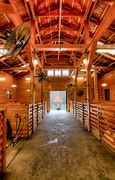

Meet the animals at the Petting Barn
Bring the whole family to enjoy our Petting Barn, where you can meet and interact with a variety of friendly farm animals. From goats and sheep to rabbits and chickens, the Petting Barn is a delightful experience for animal lovers of all ages.
Our knowledgeable staff are on hand to answer any questions and provide information about the animals. You can also purchase feed to give to the animals, making your visit even more interactive and fun.
The Petting Barn is open year-round, so there's always a chance to meet new furry and feathered friends. Come and enjoy the farm life at Sunny Acres!